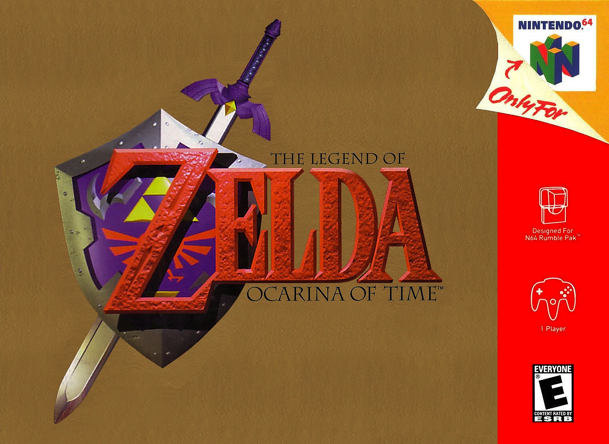
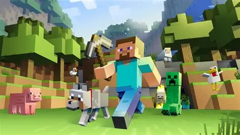
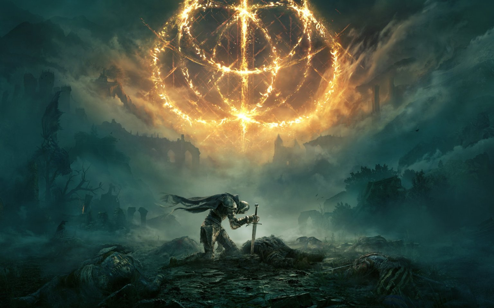

Seis juegos que definieron la evolución del desarrollo
Super Mario Bros (1985)

Año: 1985
Desarrollador: Nintendo
Motor: Programación directa sobre NES, gráficos 2D de sprites
Super Mario Bros redefinió el diseño de niveles en 2D y mostró cómo una historia simple podía acompañar un gameplay adictivo. Los gráficos eran coloridos pero limitados por la memoria de la NES, obligando a los diseñadores a optimizar cada sprite y animación.
The Legend of Zelda: Ocarina of Time (1998)
Año: 1998
Desarrollador: Nintendo EAD
Motor: Motor interno de Nintendo 64 para gráficos 3D, cámaras dinámicas
Este juego introdujo cámaras adaptativas, combate lock-on y exploración de mundos abiertos en 3D. El desarrollo fue un gran reto técnico por las limitaciones del N64, pero su diseño de niveles y narrativa se convirtieron en referencia para futuros RPGs en 3D.
Halo: Combat Evolved (2001)

Año: 2001
Desarrollador: Bungie
Motor: Motor interno de Halo, gráficos 3D, IA avanzada y diseño de niveles abierto
Halo revolucionó los shooters en consolas, introduciendo mundos semiabiertos en 3D, combate estratégico, vehículos y una IA de enemigos compleja que respondía de manera dinámica al jugador. Su diseño de niveles, narrativa de ciencia ficción y jugabilidad multijugador sentaron las bases de muchos shooters modernos.
Minecraft (2011)
Año: 2011
Desarrollador: Mojang Studios
Motor: Java + motor propio de bloques, renderizado de chunks
Minecraft destaca por su mundo generado proceduralmente y diseño emergente. Su motor de bloques permitió a los jugadores construir y modificar entornos en tiempo real, demostrando que la creatividad podía ser central al gameplay y no solo la narrativa.
Elden Ring (2022)
Año: 2022
Desarrollador: FromSoftware
Motor: Motor propietario de FromSoftware, mundo abierto, IA avanzada
Elden Ring combina mundo abierto, combate estratégico y narrativa ambiental. Su desarrollo requirió coordinar IA, físicas, animaciones complejas y gráficos realistas, mostrando cómo los grandes títulos actuales integran múltiples disciplinas en un solo juego.
Assassins Creed Shadows (2025)

Año: 2025
Desarrollador: Ubisoft Quebec / Publicado por Ubisoft
Motor: Anvil (motor interno de Ubisoft actualizado para la nueva generación)
Assassins Creed Shadows lleva a los jugadores a un Japón feudal hiperrealista con mundo abierto completamente dinámico. Su motor Anvil de nueva generación integra iluminación global, físicas avanzadas de multitudes, animaciones fluidas y entornos destructibles. Cada decisión del jugador afecta al mundo de forma orgánica, ofreciendo una experiencia evolutiva y profunda.